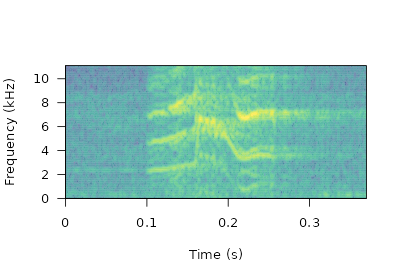
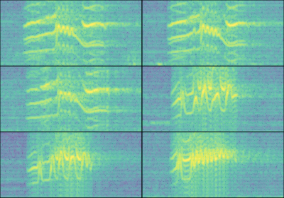
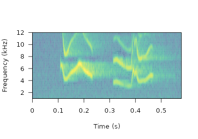

Annotation data format
Marcelo Araya-Salas, PhD
2024-03-28
Source:vignettes/annotation_data_format.Rmd
annotation_data_format.RmdThis vignette explains in detail the structure of the R data objects containing sound file annotations that are required by the package warbleR.

An annotation table (or selection table in Raven’s and warbleR’s terminology) is a data set that contains information about the location in time (and sometimes in frequency) of the sounds of interest in one or more sound files. warbleR can take sound file annotations represented in the following R objects:
- Data frames
- Selection tables
- Extended selection tables
The last 2 are annotation specific R classes included in warbleR. Here we described the basic structure of these objects and how they can be created.
Data frames
Data frames with sound file annotations must contain the following columns:
- sound.files: character or factor column with the name of the sound files including the file extension (e.g. “rec_1.wav”)
- selec: numeric, character or factor column with a unique identifier (at least within each sound file) for each annotation (e.g. 1, 2, 3 or “a”, “b”, “c”)
- start: numeric column with the start position in time of an annotated sound (in seconds)
- end: numeric column with the end position in time of an annotated sound (in seconds)
| sound.files | selec | start | end |
|---|---|---|---|
| sound_file_1.wav | 1 | 3.02 | 5.58 |
| sound_file_1.wav | 2 | 7.92 | 9.00 |
| sound_file_2.wav | 1 | 4.21 | 5.34 |
| sound_file_2.wav | 2 | 8.85 | 11.57 |
Data frames containing annotations can also include the following optional columns:
- bottom.freq: numeric column with the bottom frequency of the frequency range of the annotation (in kHz)
- top.freq: numeric column with the top frequency of the frequency range of the annotation (in kHz)
- channel: numeric column with the number of the channel in which the annotation is found in a multi-channel sound file (optional, by default is 1 if not supplied)
| sound.files | selec | start | end | bottom.freq | top.freq | channel |
|---|---|---|---|---|---|---|
| sound_file_1.wav | 1 | 3.02 | 5.58 | 5.46 | 10.22 | 1 |
| sound_file_1.wav | 2 | 7.92 | 9.00 | 3.73 | 9.36 | 1 |
| sound_file_2.wav | 1 | 4.21 | 5.34 | 4.31 | 9.40 | 1 |
| sound_file_2.wav | 2 | 8.85 | 11.57 | 4.55 | 9.11 | 1 |
The sample data “lbh_selec_table” contains a data frame with annotations with the format expected by warbleR:
| sound.files | channel | selec | start | end | bottom.freq | top.freq |
|---|---|---|---|---|---|---|
| Phae.long1.wav | 1 | 1 | 1.169 | 1.342 | 2.22 | 8.60 |
| Phae.long1.wav | 1 | 2 | 2.158 | 2.321 | 2.17 | 8.81 |
| Phae.long1.wav | 1 | 3 | 0.343 | 0.518 | 2.22 | 8.76 |
| Phae.long2.wav | 1 | 1 | 0.160 | 0.292 | 2.32 | 8.82 |
| Phae.long2.wav | 1 | 2 | 1.457 | 1.583 | 2.28 | 8.89 |
| Phae.long3.wav | 1 | 1 | 0.627 | 0.758 | 3.01 | 8.82 |
| Phae.long3.wav | 1 | 2 | 1.974 | 2.104 | 2.78 | 8.89 |
| Phae.long3.wav | 1 | 3 | 0.123 | 0.255 | 2.32 | 9.31 |
| Phae.long4.wav | 1 | 1 | 1.517 | 1.662 | 2.51 | 9.22 |
| Phae.long4.wav | 1 | 2 | 2.933 | 3.077 | 2.58 | 10.23 |
| Phae.long4.wav | 1 | 3 | 0.145 | 0.290 | 2.58 | 9.74 |
Typically, annotations are created in other sound analysis programs
(mainly, Raven, Avisoft, Syrinx and Audacity) and then imported into
R. We recommend annotating sound files in Raven
sound analysis software (Cornell Lab of Ornithology) and
then importing them into R with the package Rraven.
This package facilitates data exchange between R and Raven
sound analysis software and allow users to import annotation data
into R using the warbleR annotation format (see
argument ‘warbler.format’ in the function imp_raven()).
Data frames containing annotations always refer to sound files. Therefore, when using data frames users must always indicate the location of the sound files to every warbleR function when providing annotations in this format.
warbleR annotation formats
Selection tables
These objects are created with the selection_table()
function. The function takes data frames containing annotation data as
in the format described above. Therefore the same mandatory and optional
columns are used by selection tables. The function verifies if the
information is consistent (see the function check_sels()
for details) and saves the ‘diagnostic’ metadata as an attribute in the
output object. Selection tables are basically data frames in which the
information contained has been double checked to ensure it can be read
by other warbleR functions.
Selection tables are created by the function
selection_table():
# write example sound files in temporary directory
writeWave(Phae.long1, file.path(tempdir(), "Phae.long1.wav"))
writeWave(Phae.long2, file.path(tempdir(), "Phae.long2.wav"))
writeWave(Phae.long3, file.path(tempdir(), "Phae.long3.wav"))
writeWave(Phae.long4, file.path(tempdir(), "Phae.long4.wav"))
st <-
selection_table(X = lbh_selec_table, path = tempdir())
knitr::kable(st)| sound.files | channel | selec | start | end | bottom.freq | top.freq |
|---|---|---|---|---|---|---|
| Phae.long1.wav | 1 | 1 | 1.169 | 1.342 | 2.22 | 8.60 |
| Phae.long1.wav | 1 | 2 | 2.158 | 2.321 | 2.17 | 8.81 |
| Phae.long1.wav | 1 | 3 | 0.343 | 0.518 | 2.22 | 8.76 |
| Phae.long2.wav | 1 | 1 | 0.160 | 0.292 | 2.32 | 8.82 |
| Phae.long2.wav | 1 | 2 | 1.457 | 1.583 | 2.28 | 8.89 |
| Phae.long3.wav | 1 | 1 | 0.627 | 0.758 | 3.01 | 8.82 |
| Phae.long3.wav | 1 | 2 | 1.974 | 2.104 | 2.78 | 8.89 |
| Phae.long3.wav | 1 | 3 | 0.123 | 0.255 | 2.32 | 9.31 |
| Phae.long4.wav | 1 | 1 | 1.517 | 1.662 | 2.51 | 9.22 |
| Phae.long4.wav | 1 | 2 | 2.933 | 3.077 | 2.58 | 10.23 |
| Phae.long4.wav | 1 | 3 | 0.145 | 0.290 | 2.58 | 9.74 |
Selection table is an especific object class:
class(st)[1] "selection_table" "data.frame" They have their own printing method:
stObject of class 'selection_table'
* The output of the following call:
selection_table(X = lbh_selec_table, path = tempdir(), pb = FALSE)
Contains: * A selection table data frame with 11 rows and 7 columns:
|sound.files | channel| selec| start| end| bottom.freq|
|:--------------|-------:|-----:|-----:|-----:|-----------:|
|Phae.long1.wav | 1| 1| 1.169| 1.342| 2.22|
|Phae.long1.wav | 1| 2| 2.158| 2.321| 2.17|
|Phae.long1.wav | 1| 3| 0.343| 0.518| 2.22|
|Phae.long2.wav | 1| 1| 0.160| 0.292| 2.32|
|Phae.long2.wav | 1| 2| 1.457| 1.583| 2.28|
|Phae.long3.wav | 1| 1| 0.627| 0.758| 3.01|
... 1 more column(s) (top.freq)
and 5 more row(s)
* A data frame (check.results) with 11 rows generated by check_sels() (as attribute)
created by warbleR 1.1.30Note that the path to the sound files must be provided. This is necessary in order to verify that the data provided conforms to the characteristics of the audio files.
Selection table also refer to sound files. Therefore, users must always indicate the location of the sound files to every warbleR function when providing annotations in this format
Extended selection tables
Extended selection tables are annotations that include both the acoustic and annotation data. This an specific object class, extended_selection_table, that include a list of ‘wave’ objects corresponding to each of the selections in the data. Therefore, the function transforms the selection table into self-contained objects since the original sound files are no longer needed to perform most of the acoustic analysis in warbleR. This can facilitate the storage and exchange of (bio)acoustic data. This format can also speed up analyses, since it is not necessary to read the sound files every time the data is analyzed.
The selection_table() function also creates extended
selection tables. To do this, users must set the argument
extended = TRUE (otherwise, the class would be a selection
table). The following code converts the example ‘lbh_selec_table’ data
into an extended selection table:
est <- selection_table(
X = lbh_selec_table,
pb = FALSE,
extended = TRUE,
path = tempdir()
)Extended selection table is an specific object class:
class(est)[1] "extended_selection_table" "data.frame" The class has its own printing method:
estObject of class 'extended_selection_table'
* The output of the following call:
selection_table(X = lbh_selec_table, path = tempdir(), extended = TRUE, pb = FALSE)
Contains:
* A selection table data frame with 11 row(s) and 7 columns:
|sound.files | channel| selec| start| end| bottom.freq|
|:----------------|-------:|-----:|-----:|-----:|-----------:|
|Phae.long1.wav_1 | 1| 1| 0.1| 0.273| 2.22|
|Phae.long1.wav_2 | 1| 1| 0.1| 0.263| 2.17|
|Phae.long1.wav_3 | 1| 1| 0.1| 0.275| 2.22|
|Phae.long2.wav_1 | 1| 1| 0.1| 0.233| 2.32|
|Phae.long2.wav_2 | 1| 1| 0.1| 0.226| 2.28|
|Phae.long3.wav_1 | 1| 1| 0.1| 0.231| 3.01|
... 1 more column(s) (top.freq)
and 5 more row(s)
* 11 wave object(s) (as attributes):
Phae.long1.wav_1, Phae.long1.wav_2, Phae.long1.wav_3, Phae.long2.wav_1, Phae.long2.wav_2, Phae.long3.wav_1
... and 5 more
* A data frame (check.results) with 11 rows generated by check_sels() (as attribute)
The selection table was created by element (see 'class_extended_selection_table')
* 1 sampling rate(s) (in kHz): 22.5
* 1 bit depth(s): 16
* Created by warbleR 1.1.30Handling extended selection tables
Several functions can be used to deal with objects of this class. First can test if the object belongs to the extended_selection_table:
[1] TRUEYou can subset the selection in the same way that any other data frame and it will still keep its attributes:
est2 <- est[1:2, ]
is_extended_selection_table(est2)[1] TRUEAs shown above, there is also a generic version of
print() for this class of objects:
## print
print(est)Object of class 'extended_selection_table'
* The output of the following call:
selection_table(X = lbh_selec_table, path = tempdir(), extended = TRUE, pb = FALSE)
Contains:
* A selection table data frame with 11 row(s) and 7 columns:
|sound.files | channel| selec| start| end| bottom.freq|
|:----------------|-------:|-----:|-----:|-----:|-----------:|
|Phae.long1.wav_1 | 1| 1| 0.1| 0.273| 2.22|
|Phae.long1.wav_2 | 1| 1| 0.1| 0.263| 2.17|
|Phae.long1.wav_3 | 1| 1| 0.1| 0.275| 2.22|
|Phae.long2.wav_1 | 1| 1| 0.1| 0.233| 2.32|
|Phae.long2.wav_2 | 1| 1| 0.1| 0.226| 2.28|
|Phae.long3.wav_1 | 1| 1| 0.1| 0.231| 3.01|
... 1 more column(s) (top.freq)
and 5 more row(s)
* 11 wave object(s) (as attributes):
Phae.long1.wav_1, Phae.long1.wav_2, Phae.long1.wav_3, Phae.long2.wav_1, Phae.long2.wav_2, Phae.long3.wav_1
... and 5 more
* A data frame (check.results) with 11 rows generated by check_sels() (as attribute)
The selection table was created by element (see 'class_extended_selection_table')
* 1 sampling rate(s) (in kHz): 22.5
* 1 bit depth(s): 16
* Created by warbleR 1.1.30… which is equivalent to:
estObject of class 'extended_selection_table'
* The output of the following call:
selection_table(X = lbh_selec_table, path = tempdir(), extended = TRUE, pb = FALSE)
Contains:
* A selection table data frame with 11 row(s) and 7 columns:
|sound.files | channel| selec| start| end| bottom.freq|
|:----------------|-------:|-----:|-----:|-----:|-----------:|
|Phae.long1.wav_1 | 1| 1| 0.1| 0.273| 2.22|
|Phae.long1.wav_2 | 1| 1| 0.1| 0.263| 2.17|
|Phae.long1.wav_3 | 1| 1| 0.1| 0.275| 2.22|
|Phae.long2.wav_1 | 1| 1| 0.1| 0.233| 2.32|
|Phae.long2.wav_2 | 1| 1| 0.1| 0.226| 2.28|
|Phae.long3.wav_1 | 1| 1| 0.1| 0.231| 3.01|
... 1 more column(s) (top.freq)
and 5 more row(s)
* 11 wave object(s) (as attributes):
Phae.long1.wav_1, Phae.long1.wav_2, Phae.long1.wav_3, Phae.long2.wav_1, Phae.long2.wav_2, Phae.long3.wav_1
... and 5 more
* A data frame (check.results) with 11 rows generated by check_sels() (as attribute)
The selection table was created by element (see 'class_extended_selection_table')
* 1 sampling rate(s) (in kHz): 22.5
* 1 bit depth(s): 16
* Created by warbleR 1.1.30You can also split them and/or combine them by rows. Here the
original extended_selection_table is divided into 2 and bound
again using rbind():
est3 <- est[1:5, ]
est4 <- est[6:11, ]
est5 <- rbind(est3, est4)
# print
est5Object of class 'extended_selection_table'
* The output of the following call:
rbind(deparse.level, ..1, ..2)
Contains:
* A selection table data frame with 11 row(s) and 7 columns:
|sound.files | channel| selec| start| end| bottom.freq|
|:----------------|-------:|-----:|-----:|-----:|-----------:|
|Phae.long1.wav_1 | 1| 1| 0.1| 0.273| 2.22|
|Phae.long1.wav_2 | 1| 1| 0.1| 0.263| 2.17|
|Phae.long1.wav_3 | 1| 1| 0.1| 0.275| 2.22|
|Phae.long2.wav_1 | 1| 1| 0.1| 0.233| 2.32|
|Phae.long2.wav_2 | 1| 1| 0.1| 0.226| 2.28|
|Phae.long3.wav_1 | 1| 1| 0.1| 0.231| 3.01|
... 1 more column(s) (top.freq)
and 5 more row(s)
* 11 wave object(s) (as attributes):
Phae.long1.wav_1, Phae.long1.wav_2, Phae.long1.wav_3, Phae.long2.wav_1, Phae.long2.wav_2, Phae.long3.wav_1
... and 5 more
* A data frame (check.results) with 11 rows generated by check_sels() (as attribute)
The selection table was created by element (see 'class_extended_selection_table')
* 1 sampling rate(s) (in kHz): 22.5
* 1 bit depth(s): 16
* Created by warbleR 1.1.30The resulting extended selection table contains the same data as the original extended selection table:
# same annotations
all.equal(est, est5, check.attributes = FALSE)[1] TRUE[1] TRUEThe ‘wave’ objects can be read individually using
read_sound_file(), a wrapper for the
readWave() function from tuneR, which can
handle extended selection tables:
wv1 <- read_sound_file(X = est, index = 3, from = 0, to = 0.37)These are regular ‘wave’ objects:
class(wv1)[1] "Wave"
attr(,"package")
[1] "tuneR"
wv1
Wave Object
Number of Samples: 8325
Duration (seconds): 0.37
Samplingrate (Hertz): 22500
Channels (Mono/Stereo): Mono
PCM (integer format): TRUE
Bit (8/16/24/32/64): 16
# print spectrogram
seewave::spectro(
wv1,
wl = 150,
grid = FALSE,
scale = FALSE,
ovlp = 90,
palette = viridis::viridis,
collevels = seq(-100, 0 , 5)
)
par(mfrow = c(3, 2), mar = rep(0, 4))
for (i in 1:6) {
wv <- read_sound_file(
X = est,
index = i,
from = 0.05,
to = 0.32
)
seewave::spectro(
wv,
wl = 150,
grid = FALSE,
scale = FALSE,
axisX = FALSE,
axisY = FALSE,
ovlp = 90,
palette = viridis::viridis,
collevels = seq(-100, 0 , 5)
)
}
The read_sound_file() function requires a selection
table, as well as the row index (i.e. the row number) to be able to read
the ‘wave’ objects. It can also read a regular ‘wave’ file if the path
is provided.
Note that other functions that modify data frames are likely to delete the attributes in which the ‘wave’ objects and metadata are stored. For example, the merge and the extended selection box will remove its attributes:
# create new data frame
Y <-
data.frame(
sound.files = est$sound.files,
site = "La Selva",
lek = c(rep("SUR", 5), rep("CCL", 6))
)
# combine
mrg_est <- merge(est, Y, by = "sound.files")
# check class
is_extended_selection_table(mrg_est)[1] FALSEIn this case, we can use the
fix_extended_selection_table() function to transfer the
attributes of the original extended selection table:
# fix est
mrg_est <- fix_extended_selection_table(X = mrg_est, Y = est)
# check class
is_extended_selection_table(mrg_est)[1] TRUEThis works as long as some of the original sound files are retained and no other selections are added.
Finally, these objects can be used as input for most
warbleR functions, without the need of refering to any
sound file. For instance we can easily measure acoustic parameters on
data in extended_selection_table format using the function
spectro_analysis():
# parametros espectrales
sp <- spectro_analysis(est)
# check first 10 columns
sp[, 1:10]| sound.files | selec | duration | meanfreq | sd | freq.median | freq.Q25 | freq.Q75 | freq.IQR | time.median |
|---|---|---|---|---|---|---|---|---|---|
| Phae.long1.wav_1 | 1 | 0.173 | 5.98 | 1.40 | 6.33 | 5.30 | 6.87 | 1.57 | 0.080 |
| Phae.long1.wav_2 | 1 | 0.163 | 6.00 | 1.42 | 6.21 | 5.33 | 6.88 | 1.55 | 0.082 |
| Phae.long1.wav_3 | 1 | 0.175 | 6.02 | 1.51 | 6.42 | 5.15 | 6.98 | 1.83 | 0.094 |
| Phae.long2.wav_1 | 1 | 0.133 | 6.40 | 1.34 | 6.60 | 5.61 | 7.38 | 1.77 | 0.074 |
| Phae.long2.wav_2 | 1 | 0.126 | 6.31 | 1.37 | 6.60 | 5.61 | 7.21 | 1.60 | 0.084 |
| Phae.long3.wav_1 | 1 | 0.131 | 6.61 | 1.09 | 6.67 | 6.06 | 7.34 | 1.27 | 0.058 |
| Phae.long3.wav_2 | 1 | 0.130 | 6.64 | 1.12 | 6.67 | 6.11 | 7.43 | 1.32 | 0.072 |
| Phae.long3.wav_3 | 1 | 0.131 | 6.58 | 1.25 | 6.65 | 6.03 | 7.39 | 1.36 | 0.058 |
| Phae.long4.wav_1 | 1 | 0.145 | 6.22 | 1.48 | 6.23 | 5.46 | 7.30 | 1.85 | 0.087 |
| Phae.long4.wav_2 | 1 | 0.144 | 6.46 | 1.59 | 6.34 | 5.63 | 7.57 | 1.94 | 0.087 |
| Phae.long4.wav_3 | 1 | 0.145 | 6.12 | 1.54 | 6.08 | 5.18 | 7.24 | 2.06 | 0.087 |
‘By element’ vs ‘by song’ extended selection tables
As mention above extended selection tables by default contain one wave object for each annotation (i.e. row):
[1] TRUEThis default behavior generates a ‘by element’ extended selection
table, as each resulting wave object contains a single element (usually
defined as continuous traces of power spectral entropy in the
spectrograms). Acoustic signals can have structure above this basic
signal units (elements), like in long repertoire songs or multi-syllable
calls, in which elements are always broadcast as a sequences, often with
consistent order and timing. It is then desirable to keep information
about the relative position of elements in these sequences. However,‘by
element’ extended selection tables discards some element sequence
information. This can be overwritten using the argument
by.song, which allows to keep in a single wave object all
the elements belonging to the same ‘song’. In this case song refers to
any grouping of sounds above the ‘element’ level.
The song of the Scale-throated Hermit (Phaethornis eurynome) will be used to show how this can be done. This song consists of a sequence of two elements, which are separated by short gaps:
Annotated spectrogram of Scale-throated Hermit songs. Vertical orange lines highlight songs while skyblue boxes show the frequency-time position of individual elements. The sound file can be found at https://xeno-canto.org/15607.
An example sound file with this species’ song can be downloaded as follows (the sound file can also be downloaded manually from this link):
# load data
data("sth_annotations")
# download sound file from Xeno-Canto using catalog id
out <-
query_xc(qword = "nr:15607",
download = TRUE,
path = tempdir())
# check file is found in temporary directory
list.files(path = tempdir(), "mp3")[1] "Phaethornis-eurynome-15607.mp3"warbleR comes with an example data set containing annotations on this sound file, which can be loaded like this:
# load Scale-throated Hermit example annotations
data("sth_annotations")Note that these annotations contain an additional column called ‘song’, with the song ID labels for elements (rows) belonging to the same song:
| sound.files | selec | channel | start | end | bottom.freq | top.freq | song | element |
|---|---|---|---|---|---|---|---|---|
| Phaethornis-eurynome-15607.mp3 | 1 | 1 | 0.774 | 0.952 | 4.08 | 8.49 | 1 | a |
| Phaethornis-eurynome-15607.mp3 | 2 | 1 | 0.976 | 1.152 | 2.98 | 9.15 | 1 | b |
| Phaethornis-eurynome-15607.mp3 | 3 | 1 | 2.808 | 2.984 | 4.30 | 6.95 | 2 | a |
| Phaethornis-eurynome-15607.mp3 | 4 | 1 | 3.009 | 3.185 | 2.98 | 10.00 | 2 | b |
| Phaethornis-eurynome-15607.mp3 | 5 | 1 | 4.201 | 4.382 | 4.08 | 6.95 | 3 | a |
| Phaethornis-eurynome-15607.mp3 | 6 | 1 | 4.401 | 4.572 | 3.20 | 10.00 | 3 | b |
These data (annotations + sound file) can be used to create a ‘by song’ extended selection table. To do this the name of the column containing the ‘song’ level labels must be supplied to the argument ‘by.song’:
# create by song extended selection table
bs_est <-
selection_table(X = sth_annotations,
extended = TRUE,
by.song = "song",
path = tempdir())
[30mchecking selections (step 1 of 2):
[39m
[30msaving wave objects into extended selection table (step 2 of 2):
[39mIn a ‘by song’ extended selection table there are as many wave objects as songs in our annotation data:
[1] TRUEWe can extract an entire wave object to check that two elements are actually included:
# extract wave object
wave_song1 <-
read_sound_file(
X = bs_est,
index = 1,
from = 0,
to = Inf
)
# plot spectro
seewave::spectro(
wave_song1,
wl = 150,
grid = FALSE,
scale = FALSE,
ovlp = 90,
palette = viridis::viridis,
collevels = seq(-100, 0 , 5),
flim = c(1, 12)
)
Note that ‘by song’ extended selection tables can be converted into
‘by element’ tables using the function
by_element_est().
Performance
The use of extended_selection_table objects can improve
performance (in our case, measured as time). Here we use
microbenchmark to compare the performance of
sig2noise() and ggplot2 to plot the
results. First, a selection table with 1000 selections is created simply
by repeating the sample data frame several times and then is converted
to an extended selection table:
# create long selection table
lng.selec.table <- do.call(rbind, replicate(10, lbh_selec_table,
simplify = FALSE))
# relabels selec
lng.selec.table$selec <- 1:nrow(lng.selec.table)
# create extended selection table
lng_est <- selection_table(X = lng.selec.table,
pb = FALSE,
extended = TRUE)
# load packages
library(microbenchmark)
library(ggplot2)
# check performance
mbmrk.snr <- microbenchmark(
extended = sig2noise(lng_est,
mar = 0.05),
regular = sig2noise(lng.selec.table,
mar = 0.05),
times = 50
)
autoplot(mbmrk.snr) + ggtitle("sig2noise")The function runs much faster in the extended selection tables. Performance gain is likely to improve when longer recordings and data sets are used (that is, to compensate for computing overhead).
Sharing acoustic data
This new object class allows to share complete data sets, including acoustic data. To do this we can make use of the RDS file format to save extended selection tables. These files can be easily shared with others, allowing to share a entire acoustic data set in a single file, something that can be tricky when dealing with acoustic data. For example, the following code downloads an extended selection table of inquiry calls from Spix’s disc-winged bats used in Araya-Salas et al (2020) (it can take a few minutes! Can also be manually downloaded from here):
URL <- "https://figshare.com/ndownloader/files/21167052"
download.file(
url = URL,
destfile = file.path(tempdir(), "est_inquiry.RDS"),
method = "wget"
)
est <- readRDS(file.path(tempdir(), "est_inquiry.RDS"))
nrow(est)[1] 336This data is ready to be used. For instance, here I create a multipanel graph with the spectrograms of the first 6 selections:
par(mfrow = c(3, 2), mar = rep(0, 4))
for (i in 1:6) {
wv <- read_wave(
X = est,
index = i,
from = 0.05,
to = 0.17
)
spectro(
wv,
grid = FALSE,
scale = FALSE,
axisX = FALSE,
axisY = FALSE,
ovlp = 90,
flim = c(10, 50),
palette = viridis::viridis,
collevels = seq(-100, 0 , 5)
)
}We can also measured pairwise cross correlation (for simplicity only on the first 4 rows):
xcorr_inquiry <- cross_correlation(est[1:4, ])
xcorr_inquiry
[30mcreating spectrogram matrices (step 1 of 2):
[39m
[30mrunning cross-correlation (step 2 of 2):
[39m| T2018-01-04_11-37-50_0000010.wav_1-1 | T2018-01-04_11-37-50_0000010.wav_10-1 | T2018-01-04_11-37-50_0000010.wav_11-1 | T2018-01-04_11-37-50_0000010.wav_12-1 | |
|---|---|---|---|---|
| T2018-01-04_11-37-50_0000010.wav_1-1 | 1.000 | 0.522 | 0.535 | 0.594 |
| T2018-01-04_11-37-50_0000010.wav_10-1 | 0.522 | 1.000 | 0.869 | 0.660 |
| T2018-01-04_11-37-50_0000010.wav_11-1 | 0.535 | 0.869 | 1.000 | 0.833 |
| T2018-01-04_11-37-50_0000010.wav_12-1 | 0.594 | 0.660 | 0.833 | 1.000 |
References
- Araya-Salas (2017), Rraven: connecting R and Raven bioacoustic software. R package version 1.0.2.
- Araya-Salas, M., Hernández-Pinsón, H. A., Rojas, N., & Chaverri, G. (2020). Ontogeny of an interactive call-and-response system in Spix’s disc-winged bats. Animal Behaviour, 166, 233-245.
Session information
R version 4.3.3 (2024-02-29)
Platform: x86_64-pc-linux-gnu (64-bit)
Running under: Ubuntu 22.04.4 LTS
Matrix products: default
BLAS: /usr/lib/x86_64-linux-gnu/openblas-pthread/libblas.so.3
LAPACK: /usr/lib/x86_64-linux-gnu/openblas-pthread/libopenblasp-r0.3.20.so; LAPACK version 3.10.0
locale:
[1] LC_CTYPE=C.UTF-8 LC_NUMERIC=C LC_TIME=C.UTF-8 LC_COLLATE=C.UTF-8
[5] LC_MONETARY=C.UTF-8 LC_MESSAGES=C.UTF-8 LC_PAPER=C.UTF-8 LC_NAME=C
[9] LC_ADDRESS=C LC_TELEPHONE=C LC_MEASUREMENT=C.UTF-8 LC_IDENTIFICATION=C
time zone: UTC
tzcode source: system (glibc)
attached base packages:
[1] stats graphics grDevices utils datasets methods base
other attached packages:
[1] kableExtra_1.4.0 warbleR_1.1.30 NatureSounds_1.0.4 knitr_1.45 seewave_2.2.3
[6] tuneR_1.4.6
loaded via a namespace (and not attached):
[1] gtable_0.3.4 rjson_0.2.21 xfun_0.43 bslib_0.6.2 ggplot2_3.5.0
[6] vctrs_0.6.5 tools_4.3.3 bitops_1.0-7 parallel_4.3.3 tibble_3.2.1
[11] proxy_0.4-27 fansi_1.0.6 highr_0.10 pkgconfig_2.0.3 desc_1.4.3
[16] lifecycle_1.0.4 compiler_4.3.3 stringr_1.5.1 textshaping_0.3.7 brio_1.1.4
[21] munsell_0.5.0 codetools_0.2-19 htmltools_0.5.8 sass_0.4.9 RCurl_1.98-1.14
[26] yaml_2.3.8 pkgdown_2.0.7 pillar_1.9.0 jquerylib_0.1.4 MASS_7.3-60.0.1
[31] cachem_1.0.8 iterators_1.0.14 viridis_0.6.5 foreach_1.5.2 digest_0.6.35
[36] stringi_1.8.3 purrr_1.0.2 fastmap_1.1.1 grid_4.3.3 colorspace_2.1-0
[41] cli_3.6.2 magrittr_2.0.3 utf8_1.2.4 shinyBS_0.61.1 scales_1.3.0
[46] rmarkdown_2.26 signal_1.8-0 gridExtra_2.3 ragg_1.3.0 memoise_2.0.1
[51] pbapply_1.7-2 evaluate_0.23 dtw_1.23-1 fftw_1.0-8 testthat_3.2.1
[56] viridisLite_0.4.2 rlang_1.1.3 Rcpp_1.0.12 glue_1.7.0 xml2_1.3.6
[61] svglite_2.1.3 rstudioapi_0.16.0 jsonlite_1.8.8 soundgen_2.6.2 R6_2.5.1
[66] systemfonts_1.0.6 fs_1.6.3